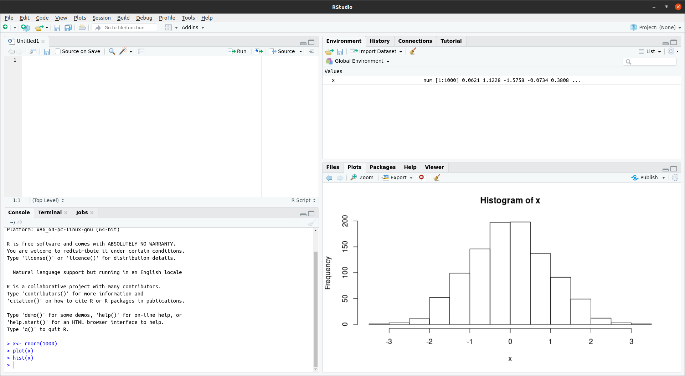
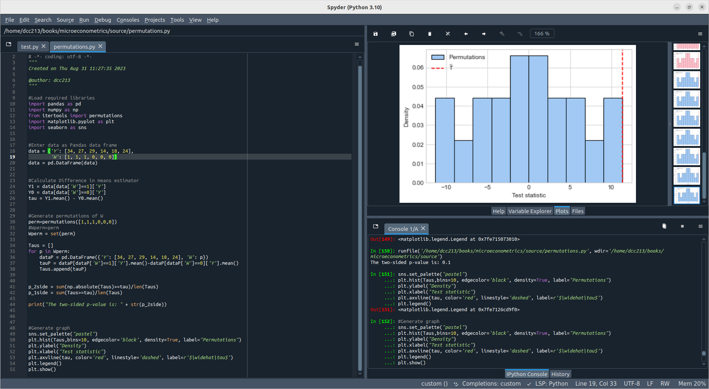
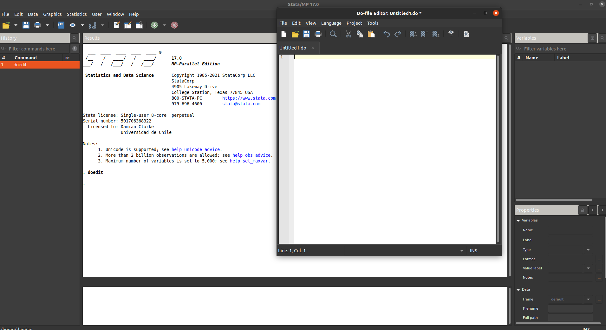

pythonGetting Set Up
In the following section, we will provide a primer to number of languages, specifically R, Python and Stata. These introduction seek to provide the necessary tools to get up and running with the things that we will need throughout the rest of the course, but are not desiged to be comprehensive overviews of the entirety of each language. We will further develop our understanding of the languages as we progress with this course.
Below we provide information about installing necessary components for each software.
R
Introduction
R has a long history, dating the early 1980s, and also an ever-growing body of user-contributed add-on packages. It also has an active community providing online support on forums such as Stack Overflow, and a substantial corpus of code online, meaning that large language models will be well suited to support you in your programming in R. It provides you with the large majority of tools you will need throughout this course, as well as the programming environment necessary to extend available tools where required.
Installing and Working with R
Information on how to download R is available on the R website, and further support can be found searching the web. In general, I recommend that you install an Integrated Development Environment (IDE) such as RStudio. RStudio (image below) provides a user-friendly interface for R, allowing you to view any elements that you have generated in the memory in R, output like graphics, help documentation, and so forth. An example of what RStudio looks like is provided below, where you can see that code is visible, as well as graphical output, and information about what is in the your “environment”. For further information on installing RStudio, see the RStudio website. You are of course welcome to use R however you prefer, and you may prefer to edit code in your favourite text editor and execute code from the command line. Throughout the rest of these resources, we will assume that you have R installed on your computer and have some way to interact with it, either via an IDE or some other work flow that suits you.

Further Resources
From here we will move to a first class about R as a language, and an overview of a number of key elements. If you are interested in generating a more complete overview of R, a number of free resources can be consulted, such as the following books provided free online:
- Wickham, Çetinkaya-Rundel, and Grolemund (2023) R for Data Science
- Wickham (2016) ggplot2: Elegant Graphics for Data Analysis
- Wilke (2019) Fundamentals of Data Visualization: A Primer on Making Informative and Compelling Figures
A range of other textbooks are available that may help you with your work in R including:
- Matloff (2011) The Art of R Programming.
and, with a particular focus on economics and causal methods:
Python
Introduction
Python was developed in the late 1980s by Guido van Rossum, and is an open source language which has gained considerable traction with users and developers, meaning that a diverse array of packages now exist to expand the base language. Like R, it has an active community providing online support on forums such as Stack Overflow, and a lot of online code available. It provides you with the large majority of tools you will need throughout this course, as well as the programming environment necessary to extend available tools where required. Python has had a number of major version upgrades throughout its history, but now versions 3 and above of Python are widely adopted. I recommend working with some version greater than 3 when you install Python, as code written in version 2 will not necessarily work in version 3.
Installing and Working with Python
Information on how to install Python can be found at the Python website, which has a brief wiki discussing installation on various operating systems. Once you have Python installed in your operating system you could work directly with Python from the command line by typing “Python” and you may see output like the below.
Python 3.8.10 (default, May 26 2023, 14:05:08)
[GCC 9.4.0] on linux
Type "help", "copyright", "credits" or "license" for more information.I recommend that along with Python, you install in Integrated Development Environment (IDE), or simply work with a text editor which provides the capabilities of an IDE. There are many IDEs which can be used with Python, see for example the list here. I can recommend Spyder (see below for a screen shot of what this looks like), or alternatively, might recommend VS Code as a broader editor which offers these capabilities and more. The value of having this IDE is that you can easily view any elements that you have generated in the memory in Python, output like graphics, help documentation, and so forth. An example of what Spyder looks like is provided below, where you can see that code is visible on the left, as well as graphical output, and calls to the command line on the right. You can also display other pieces of information such as documentation and information about what is in the your “environment”. For further information on installing Spyder, see the Spyder website. You are of course welcome to use Python however you prefer, and you may prefer to edit code in your favourite text editor and execute code from the command line. Throughout the rest of these resources, we will assume that you have Python installed on your computer and have some way to interact with it, either via an IDE or some other work flow that suits you.

Further Resources
A number of broader resources are available about Python. A very nice free online text book is:
- McKinney (2023) Python for Data Analysis.
Stata
Introduction
Stata was first developed in the mid 1980s, and is now up to release 18. Stata is particularly strong at data manipulation and statistical modelling, and along with their own developers, has an active community of researchers who contribute user-written packages. It also has an active community providing online support on forums such as Stata List. It provides you with the large majority of tools you will need throughout this book, as well as the programming environment necessary to extend available tools where required. Stata releases a new version of the program every couple of years, and a strength of Stata is that it guarantees backwards compatability. Thus, code written in older versions of Stata can be run seamlessly in future versions. However, code written in newer versions of Stata will not necessarily work in older versions of Stata, because in each version of Stata new tools are added.
Installing and Working with Stata
Stata is a paid software, and installation is described when licences are purchased. The installation of Stata is relatively straight-forward provided access is available.
For students at Exeter, Stata is available for free fom the Home Software Hub. Details regarding the process of installing can be found at this page: https://www.exeter.ac.uk/departments/it/new/softwarecatalogue/stata/
When installing Stata, the language comes with its own Graphical User Interface (GUI) which is quite user friendly. This GUI provides a command line to interact with Stata and an output window, as well as a list of commands recently executed. It also has a number of emerging windows including a built in file editor, and a graphics window. An example of what Stata looks like is provided below, where you can see that a code editor is visible, as well as a screen below where one can interact directly with Stata.

Further Resources
From here we will move to a first tutorial about Stata as a language, and an overview of a number of key elements. If you are interested in generating a more complete overview of Stata, I would highly recommend the list of resources provided on the Stata webpage. At this link they include things such as books and blogs on Stata, but also provide a number of video tutorials and online resources specifically related to learning Stata.
Other Tools
There are surely a range of other tools that you will want to have in your arsenal, and each person’s optimal “research infrastructure” will be different. As a minimum, doing research well in a computationally demanding environment likely requires the following types of tools, and we will work with many of these throughout the semester:
- A code editor (note, this might be bundled with the language you use), or you may prefer something like emacs, VS Code, or so forth which offers broader tools.
- A way to write your paper. This may be some typesetting tool like LaTeX
- Some way to keep track of changes in versions of your code. Git is the most common tool for this.
- Some scientific programming language like the ones discussed above.
There are also a range of other tools which you may use which depending on your work flow. This may include things like bibliography management tools, alternative softwares for typesetting slides or online presentation of papers (including markdown-style options), programmes for optimising communication and workflow in teams (such as slack), some sort of note taking, to do list management, and calendar tool for your, and so forth. Of course the list goes on, and will depend on your own particular needs and wants!